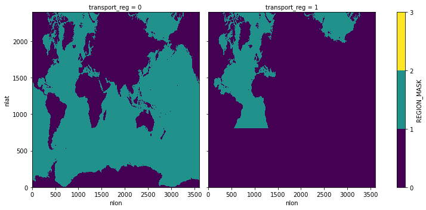

POP MOC(z) for 0.1-degree
Contents
POP MOC(z) for 0.1-degree#
Input Data: Model Output
Output Data: AMOC z diagnostics
Description: Computes MOC(z) offline from POP history files using simple xhistogram binning.
Date: February 2023
Creator: Steve Yeager (https://github.com/sgyeager/POP_MOC/blob/main/notebooks/pop_MOCz_0.1deg.ipynb)
Updated: Teagan King, February 2023
Note: To use the MOCutils, a user will need to clone the POP_MOC repository (https://github.com/sgyeager/POP_MOC) and install MOCutils by going to the POP_MOC directory and running pip install -e . --user.
%load_ext autoreload
%autoreload 2
import xarray as xr
import numpy as np
import cftime
import copy
import glob
import dask
from xhistogram.xarray import histogram
import matplotlib.pyplot as plt
%matplotlib inline
from MOCutils import popmoc
from dask.distributed import wait
dask.__version__
'2022.7.0'
Dask Cluster#
# Close out Dask Cluster and release workers:
cluster.close()
client.close()
# TODO: optimize dask resources
def get_ClusterClient():
import dask
from dask_jobqueue import PBSCluster
from dask.distributed import Client
cluster = PBSCluster(
cores=1,
memory='10GB',
processes=1,
queue='casper',
resource_spec='select=1:ncpus=1:mem=10GB',
account='P93300313',
walltime='06:00:00',
interface='ib0',)
dask.config.set({
'distributed.dashboard.link':
'https://jupyterhub.hpc.ucar.edu/stable/user/{USER}/proxy/{port}/status'
})
client = Client(cluster)
return cluster, client
cluster, client = get_ClusterClient()
cluster.scale(36)
/glade/u/home/tking/.conda/envs/ipogs/lib/python3.10/site-packages/dask_jobqueue/pbs.py:82: FutureWarning: project has been renamed to account as this kwarg was used wit -A option. You are still using it (please also check config files). If you did not set account yet, project will be respected for now, but it will be removed in a future release. If you already set account, project is ignored and you can remove it.
warnings.warn(warn, FutureWarning)
/glade/u/home/tking/.conda/envs/ipogs/lib/python3.10/site-packages/distributed/node.py:179: UserWarning: Port 8787 is already in use.
Perhaps you already have a cluster running?
Hosting the HTTP server on port 41034 instead
warnings.warn(
/glade/u/home/tking/.conda/envs/ipogs/lib/python3.10/site-packages/dask_jobqueue/pbs.py:82: FutureWarning: project has been renamed to account as this kwarg was used wit -A option. You are still using it (please also check config files). If you did not set account yet, project will be respected for now, but it will be removed in a future release. If you already set account, project is ignored and you can remove it.
warnings.warn(warn, FutureWarning)
cluster
PBSCluster
078fa95f
| Dashboard: https://jupyterhub.hpc.ucar.edu/stable/user/tking/proxy/41034/status | Workers: 0 |
| Total threads: 0 | Total memory: 0 B |
Scheduler Info
Scheduler
Scheduler-d41d9eb9-e2ad-4384-9e02-859267e4037a
| Comm: tcp://10.12.206.48:41990 | Workers: 0 |
| Dashboard: https://jupyterhub.hpc.ucar.edu/stable/user/tking/proxy/41034/status | Total threads: 0 |
| Started: Just now | Total memory: 0 B |
Workers
Read in history file data & MOC template file#
def time_set_midmonth(ds, time_name, deep=False):
"""
Return copy of ds with values of ds[time_name] replaced with mid-month
values (day=15) rather than end-month values.
"""
year = ds[time_name].dt.year
month = ds[time_name].dt.month
year = xr.where(month==1,year-1,year)
month = xr.where(month==1,12,month-1)
nmonths = len(month)
newtime = [cftime.DatetimeNoLeap(year[i], month[i], 15) for i in range(nmonths)]
ds[time_name] = newtime
return ds
def preprocessor(ds0):
keepvars = ['VVEL','WVEL']
d0 = ds0[keepvars]
d0 = time_set_midmonth(d0,'time')
return d0
# fdir = '/glade/campaign/cgd/oce/people/whokim/csm/g.e21.GRYF_0304.TL319_t13.003/ocn/hist/'
fdir = '/glade/campaign/collections/cmip/CMIP6/iHESP/BHIST/HR/B.E.13.BHISTC5.ne120_t12.sehires38.003.sunway/ocn/proc/tseries/month_1/'
# TODO: this script takes *history* files as input
# TODO: loop through file years?
fin = fdir + '*.nc'
ds = xr.open_mfdataset(fin,combine='by_coords',
preprocess=preprocessor,chunks={'time':1,'nlon':300},
coords="minimal",compat="override",data_vars="minimal",
parallel=True)
fgrd = '/glade/work/whokim/grid/POP.TL319_t13.grid.nc'
ds_grid = xr.open_dataset(fgrd)
fmoc = '/glade/u/home/yeager/analysis/python/POP_MOC/moc_template.nc'
ds_moctemp = xr.open_dataset(fmoc)
ds.WVEL
<xarray.DataArray 'WVEL' (time: 12, z_w_top: 62, nlat: 2400, nlon: 3600)>
dask.array<concatenate, shape=(12, 62, 2400, 3600), dtype=float32, chunksize=(1, 62, 2400, 300), chunktype=numpy.ndarray>
Coordinates:
* time (time) object 0060-01-15 00:00:00 ... 0060-12-15 00:00:00
* z_w_top (z_w_top) float32 0.0 1e+03 2e+03 ... 5.25e+05 5.5e+05 5.75e+05
ULONG (nlat, nlon) float64 dask.array<chunksize=(2400, 300), meta=np.ndarray>
ULAT (nlat, nlon) float64 dask.array<chunksize=(2400, 300), meta=np.ndarray>
TLONG (nlat, nlon) float64 dask.array<chunksize=(2400, 300), meta=np.ndarray>
TLAT (nlat, nlon) float64 dask.array<chunksize=(2400, 300), meta=np.ndarray>
Dimensions without coordinates: nlat, nlon
Attributes:
long_name: Vertical Velocity
units: centimeter/s
grid_loc: 3112
cell_methods: time: meanxarray.DataArray
'WVEL'
- time: 12
- z_w_top: 62
- nlat: 2400
- nlon: 3600
- dask.array<chunksize=(1, 62, 2400, 300), meta=np.ndarray>
Array Chunk Bytes 23.95 GiB 170.29 MiB Shape (12, 62, 2400, 3600) (1, 62, 2400, 300) Count 300 Tasks 144 Chunks Type float32 numpy.ndarray - time(time)object0060-01-15 00:00:00 ... 0060-12-...
array([cftime.DatetimeNoLeap(60, 1, 15, 0, 0, 0, 0, has_year_zero=True), cftime.DatetimeNoLeap(60, 2, 15, 0, 0, 0, 0, has_year_zero=True), cftime.DatetimeNoLeap(60, 3, 15, 0, 0, 0, 0, has_year_zero=True), cftime.DatetimeNoLeap(60, 4, 15, 0, 0, 0, 0, has_year_zero=True), cftime.DatetimeNoLeap(60, 5, 15, 0, 0, 0, 0, has_year_zero=True), cftime.DatetimeNoLeap(60, 6, 15, 0, 0, 0, 0, has_year_zero=True), cftime.DatetimeNoLeap(60, 7, 15, 0, 0, 0, 0, has_year_zero=True), cftime.DatetimeNoLeap(60, 8, 15, 0, 0, 0, 0, has_year_zero=True), cftime.DatetimeNoLeap(60, 9, 15, 0, 0, 0, 0, has_year_zero=True), cftime.DatetimeNoLeap(60, 10, 15, 0, 0, 0, 0, has_year_zero=True), cftime.DatetimeNoLeap(60, 11, 15, 0, 0, 0, 0, has_year_zero=True), cftime.DatetimeNoLeap(60, 12, 15, 0, 0, 0, 0, has_year_zero=True)], dtype=object) - z_w_top(z_w_top)float320.0 1e+03 ... 5.5e+05 5.75e+05
- long_name :
- depth from surface to top of layer
- units :
- centimeters
- positive :
- down
- valid_min :
- 0.0
- valid_max :
- 574999.06
array([ 0. , 1000. , 2000. , 3000. , 4000. , 5000. , 6000. , 7000. , 8000. , 9000. , 10000. , 11000. , 12000. , 13000. , 14000. , 15000. , 16000. , 17019.682, 18076.129, 19182.125, 20349.932, 21592.344, 22923.312, 24358.453, 25915.58 , 27615.26 , 29481.47 , 31542.373, 33831.227, 36387.473, 39258.047, 42498.887, 46176.656, 50370.688, 55174.91 , 60699.668, 67072.86 , 74439.805, 82960.695, 92804.35 , 104136.82 , 117104.016, 131809.36 , 148290.08 , 166499.2 , 186301.44 , 207487.39 , 229803.9 , 252990.4 , 276809.84 , 301067.06 , 325613.84 , 350344.88 , 375189.2 , 400101.16 , 425052.47 , 450026.06 , 475012. , 500004.7 , 525000.94 , 549999.06 , 574999.06 ], dtype=float32) - ULONG(nlat, nlon)float64dask.array<chunksize=(2400, 300), meta=np.ndarray>
- long_name :
- array of u-grid longitudes
- units :
- degrees_east
Array Chunk Bytes 65.92 MiB 5.49 MiB Shape (2400, 3600) (2400, 300) Count 13 Tasks 12 Chunks Type float64 numpy.ndarray - ULAT(nlat, nlon)float64dask.array<chunksize=(2400, 300), meta=np.ndarray>
- long_name :
- array of u-grid latitudes
- units :
- degrees_north
Array Chunk Bytes 65.92 MiB 5.49 MiB Shape (2400, 3600) (2400, 300) Count 13 Tasks 12 Chunks Type float64 numpy.ndarray - TLONG(nlat, nlon)float64dask.array<chunksize=(2400, 300), meta=np.ndarray>
- long_name :
- array of t-grid longitudes
- units :
- degrees_east
Array Chunk Bytes 65.92 MiB 5.49 MiB Shape (2400, 3600) (2400, 300) Count 13 Tasks 12 Chunks Type float64 numpy.ndarray - TLAT(nlat, nlon)float64dask.array<chunksize=(2400, 300), meta=np.ndarray>
- long_name :
- array of t-grid latitudes
- units :
- degrees_north
Array Chunk Bytes 65.92 MiB 5.49 MiB Shape (2400, 3600) (2400, 300) Count 13 Tasks 12 Chunks Type float64 numpy.ndarray
- long_name :
- Vertical Velocity
- units :
- centimeter/s
- grid_loc :
- 3112
- cell_methods :
- time: mean
Compute Volume Fluxes#
%%time
v_e = ds['VVEL']
v_e = v_e.where(v_e<1.e30,0)
w_e = ds['WVEL'].drop(['ULONG','ULAT'])
w_e = w_e.where(w_e<1.e30, 0)
CPU times: user 6.72 ms, sys: 0 ns, total: 6.72 ms
Wall time: 6.73 ms
# shift VVEL to 3121 position
def shiftVVEL(v):
v_w = v.roll(nlon=1,roll_coords=False)
v = 0.5*(v+v_w)
return v.drop(['ULONG','TLAT'])
v_e = shiftVVEL(v_e)
%%time
# grid-oriented volume fluxes in m^3/s
tarea = ds_grid['TAREA'].drop(['ULONG','ULAT']).astype(w_e.dtype)
w_e = w_e*tarea/1.e6
dxdz = (ds_grid['HTN'].drop(['ULONG','TLAT'])*ds_grid['dz']).astype(v_e.dtype)
v_e = v_e*dxdz/1.e6
CPU times: user 7.79 s, sys: 2.02 s, total: 9.81 s
Wall time: 27.7 s
add an extra level corresponding to zero values at ocean floor. (requires rechunking)#
w_e_bot = xr.zeros_like(w_e.isel(z_w_top=-1))
w_e_bot['z_w_top'] = ds_grid.z_w_bot[-1].data
wflux = xr.concat([w_e,w_e_bot],dim='z_w_top').rename({'z_w_top':'moc_z'}).chunk({'moc_z':63})
v_e_bot = xr.zeros_like(v_e.isel(z_t=-1))
v_e_bot['z_t'] = ds_grid.z_w_bot[-1].data
vflux = xr.concat([v_e,v_e_bot],dim='z_t').chunk({'z_t':63})
MOC Region Mask#
## Define the MOC region mask:
rmask = ds_grid.REGION_MASK.drop(['ULONG','ULAT'])
rmaskglob = xr.where((rmask>0),1,0)
rmaskatl = xr.where((rmask>=6) & (rmask<=11),1,0)
rmaskmoc = xr.concat([rmaskglob,rmaskatl],dim=ds_moctemp.transport_regions)
rmaskmoc.plot(levels=[0,1,2,3],col='transport_reg',size=5);

Compute MOC#
%%time
MOC = popmoc.compute_MOC(wflux,rmaskmoc,ds_moctemp.lat_aux_grid)
CPU times: user 463 ms, sys: 302 ms, total: 765 ms
Wall time: 948 ms
MOC
<xarray.DataArray 'MOC' (time: 12, moc_z: 63, transport_reg: 2, lat_aux_grid: 395)>
dask.array<truediv, shape=(12, 63, 2, 395), dtype=float64, chunksize=(1, 63, 2, 394), chunktype=numpy.ndarray>
Coordinates:
* lat_aux_grid (lat_aux_grid) float32 -79.49 -78.95 ... 89.47 90.0
* time (time) object 0060-01-15 00:00:00 ... 0060-12-15 00:00:00
* moc_z (moc_z) float32 0.0 1e+03 2e+03 ... 5.75e+05 6e+05
transport_regions (transport_reg) |S256 b'Global Ocean - Marginal Seas' ...
Dimensions without coordinates: transport_reg
Attributes:
long_name: Meridional Overturning Circulation
units: Svxarray.DataArray
'MOC'
- time: 12
- moc_z: 63
- transport_reg: 2
- lat_aux_grid: 395
- dask.array<chunksize=(1, 63, 2, 1), meta=np.ndarray>
Array Chunk Bytes 4.56 MiB 387.84 kiB Shape (12, 63, 2, 395) (1, 63, 2, 394) Count 3126 Tasks 24 Chunks Type float64 numpy.ndarray - lat_aux_grid(lat_aux_grid)float32-79.49 -78.95 -78.42 ... 89.47 90.0
- long_name :
- latitude grid for transport diagnostics
- units :
- degrees_north
- valid_min :
- -79.48815
- valid_max :
- 90.0
array([-79.48815 , -78.952896, -78.418655, ..., 88.948814, 89.47441 , 90. ], dtype=float32) - time(time)object0060-01-15 00:00:00 ... 0060-12-...
array([cftime.DatetimeNoLeap(60, 1, 15, 0, 0, 0, 0, has_year_zero=True), cftime.DatetimeNoLeap(60, 2, 15, 0, 0, 0, 0, has_year_zero=True), cftime.DatetimeNoLeap(60, 3, 15, 0, 0, 0, 0, has_year_zero=True), cftime.DatetimeNoLeap(60, 4, 15, 0, 0, 0, 0, has_year_zero=True), cftime.DatetimeNoLeap(60, 5, 15, 0, 0, 0, 0, has_year_zero=True), cftime.DatetimeNoLeap(60, 6, 15, 0, 0, 0, 0, has_year_zero=True), cftime.DatetimeNoLeap(60, 7, 15, 0, 0, 0, 0, has_year_zero=True), cftime.DatetimeNoLeap(60, 8, 15, 0, 0, 0, 0, has_year_zero=True), cftime.DatetimeNoLeap(60, 9, 15, 0, 0, 0, 0, has_year_zero=True), cftime.DatetimeNoLeap(60, 10, 15, 0, 0, 0, 0, has_year_zero=True), cftime.DatetimeNoLeap(60, 11, 15, 0, 0, 0, 0, has_year_zero=True), cftime.DatetimeNoLeap(60, 12, 15, 0, 0, 0, 0, has_year_zero=True)], dtype=object) - moc_z(moc_z)float320.0 1e+03 2e+03 ... 5.75e+05 6e+05
- long_name :
- depth from surface to top of layer
- units :
- centimeters
- positive :
- down
- valid_min :
- 0.0
- valid_max :
- 574999.06
array([ 0. , 1000. , 2000. , 3000. , 4000. , 5000. , 6000. , 7000. , 8000. , 9000. , 10000. , 11000. , 12000. , 13000. , 14000. , 15000. , 16000. , 17019.682, 18076.129, 19182.125, 20349.932, 21592.344, 22923.312, 24358.453, 25915.58 , 27615.26 , 29481.47 , 31542.373, 33831.227, 36387.473, 39258.047, 42498.887, 46176.656, 50370.688, 55174.91 , 60699.668, 67072.86 , 74439.805, 82960.695, 92804.35 , 104136.82 , 117104.016, 131809.36 , 148290.08 , 166499.2 , 186301.44 , 207487.39 , 229803.9 , 252990.4 , 276809.84 , 301067.06 , 325613.84 , 350344.88 , 375189.2 , 400101.16 , 425052.47 , 450026.06 , 475012. , 500004.7 , 525000.94 , 549999.06 , 574999.06 , 599999.06 ], dtype=float32) - transport_regions(transport_reg)|S256b'Global Ocean - Marginal Seas' ...
- long_name :
- regions for all transport diagnostics
- units :
array([b'Global Ocean - Marginal Seas', b'Atlantic Ocean + Mediterranean Sea + Labrador Sea + GIN Sea + Arctic Ocean + Hudson Bay'], dtype='|S256')
- long_name :
- Meridional Overturning Circulation
- units :
- Sv
%%time
MOC = MOC.load()
CPU times: user 10.6 s, sys: 567 ms, total: 11.1 s
Wall time: 54.9 s
Add Atlantic southern boundary overturning (this includes throughflow)#
# determine j=index of Atlantic region southern boundary
tmp = rmaskmoc.isel(transport_reg=1).sum('nlon')
atl_j = 0
j = 0
while (atl_j==0):
if (tmp.isel(nlat=j).data>0):
atl_j = j
j += 1
atl_j = atl_j - 1
atl_j
809
# add vflux at southern boundary of Atlantic domain
tmp = vflux*(rmaskmoc.shift(nlat=-1))
tmp = tmp.isel(nlat=atl_j,transport_reg=1).sum('nlon').rename({'z_t':'moc_z'})
mocatl_s = -tmp.sortby('moc_z',ascending=False).cumsum('moc_z').sortby('moc_z',ascending=True)/1.e6
mocatl_s['moc_z'] = MOC['moc_z']
%%time
mocatl_s = mocatl_s.load()
CPU times: user 12.9 s, sys: 2.26 s, total: 15.2 s
Wall time: 46.1 s
MOC[{'transport_reg':1}] = MOC[{'transport_reg':1}] + mocatl_s
Plots#
# Plot MOC
fig = plt.figure(figsize=(12,12))
mnlevs = np.arange(0,20,1)*2. - 12.
mycmap = copy.copy(plt.cm.RdYlBu_r)
xlim=[-30,70]
ylim=[6,0]
tr = 0 # transport_reg
trstr = 'Global'
compstr = 'Eulerian'
ax = fig.add_subplot(2,1,1)
ax.set_title('A. Offline {} {} MOC(z)'.format(trstr,compstr))
cntr1 = ax.contourf(MOC.lat_aux_grid, MOC.moc_z/1.e5, MOC.isel(time=0,transport_reg=tr),levels=mnlevs, cmap=mycmap,extend='max')
ax.contour(MOC.lat_aux_grid, MOC.moc_z/1.e5, MOC.isel(time=0,transport_reg=tr),levels=[0.], linewidths=1)
cntr1.cmap.set_over('pink')
ax.set_ylim([6,0])
ax.set_xlim([-90,90])
ax.set_xlabel('Latitude')
ax.set_ylabel('km')
ax.set_facecolor('grey')
tr = 1 # transport_reg
trstr = 'Atlantic'
ax = fig.add_subplot(2,1,2)
ax.set_title('B. Offline {} {} MOC(z)'.format(trstr,compstr))
cntr2 = ax.contourf(MOC.lat_aux_grid, MOC.moc_z/1.e5, MOC.isel(time=0,transport_reg=tr),levels=mnlevs, cmap=mycmap,extend='max')
ax.contour(MOC.lat_aux_grid, MOC.moc_z/1.e5, MOC.isel(time=0,transport_reg=tr),levels=[0.], linewidths=1)
cntr2.cmap.set_over('pink')
ax.set_ylim([6,0])
ax.set_xlim([-90,90])
ax.set_xlabel('Latitude')
ax.set_ylabel('km')
ax.set_facecolor('grey')
fig.subplots_adjust(bottom=0.1,right=0.9)
cbar_ax = fig.add_axes([0.92, 0.55, 0.02, 0.3])
fig.colorbar(cntr1, cax=cbar_ax, label='Sv', orientation='vertical')
<matplotlib.colorbar.Colorbar at 0x2ae4bf26cd00>
Write to netcdf#
# Compute annual mean MOC
MOCann = MOC.groupby('time.year').mean('time').rename({'year':'time'})
MOCann.to_netcdf('/glade/scratch/tking/testMOCz_0p1degPOP.nc')